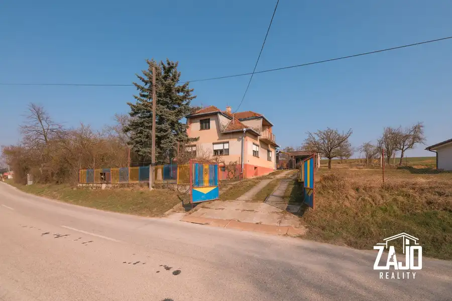
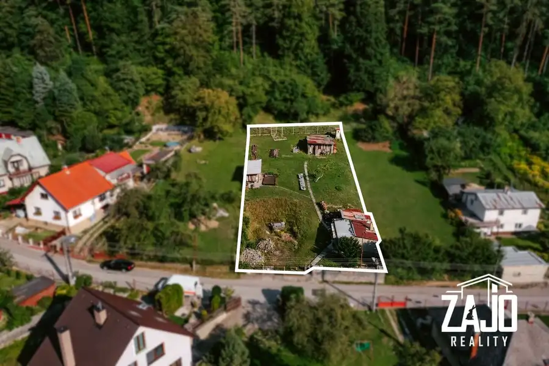
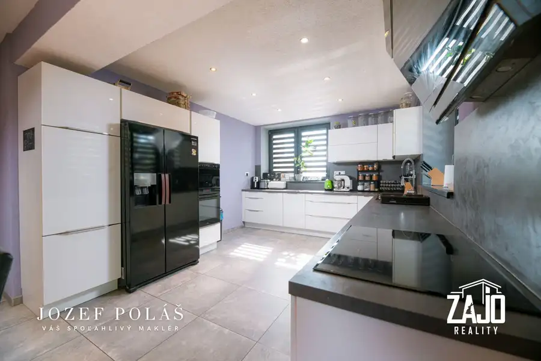
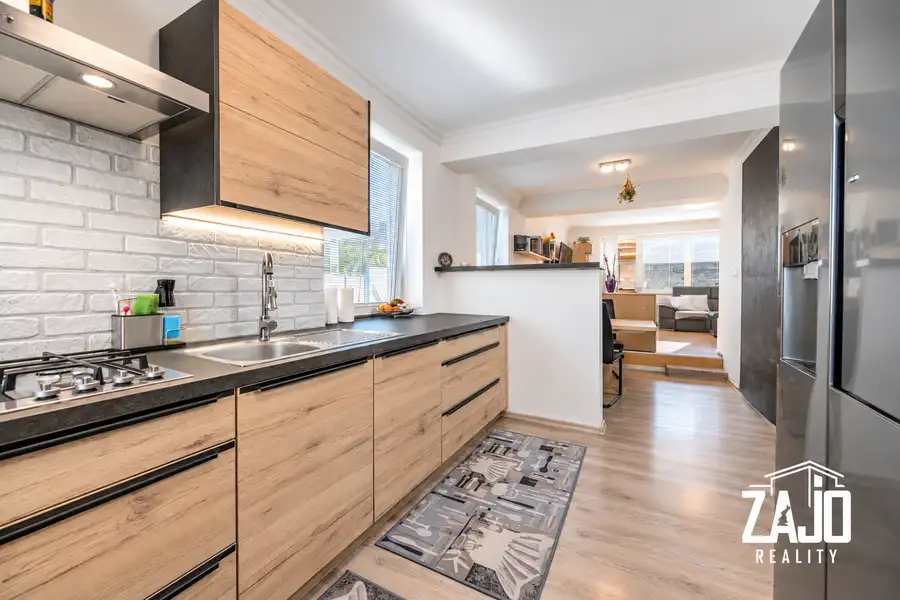
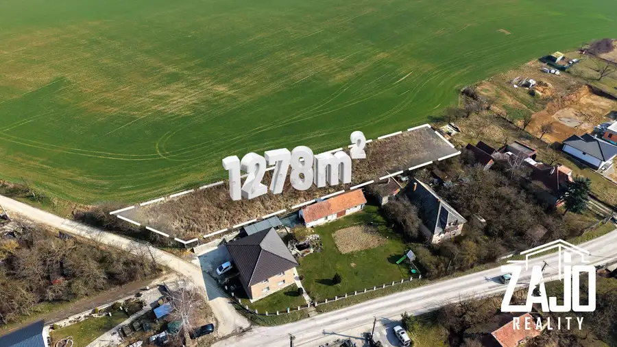

Aktuálna ponuka
9 nehnuteľností, predovšetkým rodinné domy, pozemky, byty. Každá má vlastnú stránku s fotkami, popisom a mapou.
Prezrieť ponukuJozef PolášRealitný maklér
Realitný maklér · ZAJO Reality, s.r.o.
Predaj a prenájom nehnuteľností · Trenčianske Teplice, Haláčovce, Moravské Lieskové

 DomNové10
57 000 €Na predaj | rodinný dom Moravské Lieskové – okres Nové mesto nad Váhom
Moravské Lieskové
28 m²
Ponúkame na predaj 3 izbový rodinný dom v centre obce Moravské Lieskové, ktorý je ideálny na trvalé bývanie alebo ako chalupa. Obec má základnú…
BytNové10
195 000 €Na predaj | 3-izbový byt v projekte Vila Nizza, novostavba – Trenčianske Teplice
Trenčianske Teplice
3-izbový86 m²3. podlažie
V exkluzívnom projekte Vila Nizza, situovanom v srdci kúpeľného mesta Trenčianske Teplice, ponúkame na predaj moderne riešený 3-izbový byt – ideálny…
DomNové10
267 000 €Na predaj | 4-izbový rodinný dom – Svinná (okres trenčín)
Svinná
96 m²
Ponúkame na predaj novostavbu 4-izbového rodinného domu v tichej a bezpečnej lokalite v obci Svinná.Dom je úsporný, má nízke prevádzkové náklady a…
DomNové10
57 000 €Na predaj | rodinný dom Moravské Lieskové – okres Nové mesto nad Váhom
Moravské Lieskové
28 m²
Ponúkame na predaj 3 izbový rodinný dom v centre obce Moravské Lieskové, ktorý je ideálny na trvalé bývanie alebo ako chalupa. Obec má základnú…
BytNové10
195 000 €Na predaj | 3-izbový byt v projekte Vila Nizza, novostavba – Trenčianske Teplice
Trenčianske Teplice
3-izbový86 m²3. podlažie
V exkluzívnom projekte Vila Nizza, situovanom v srdci kúpeľného mesta Trenčianske Teplice, ponúkame na predaj moderne riešený 3-izbový byt – ideálny…
DomNové10
267 000 €Na predaj | 4-izbový rodinný dom – Svinná (okres trenčín)
Svinná
96 m²
Ponúkame na predaj novostavbu 4-izbového rodinného domu v tichej a bezpečnej lokalite v obci Svinná.Dom je úsporný, má nízke prevádzkové náklady a…
 Pozemok5
45 000 €Na predaj pozemok na stavbu chaty / mobilného domu – Trenčianske Teplice
Trenčianske Teplice
1152 m²
Ponúkame Vám na predaj krásny pozemok v kúpelnom meste Trenčianske Teplice časť Baračka, ktorý sa nachádza len pár minút od centra mesta.Lokalita je…
Pozemok5
45 000 €Na predaj pozemok na stavbu chaty / mobilného domu – Trenčianske Teplice
Trenčianske Teplice
1152 m²
Ponúkame Vám na predaj krásny pozemok v kúpelnom meste Trenčianske Teplice časť Baračka, ktorý sa nachádza len pár minút od centra mesta.Lokalita je…

Dom10 75 000 €Na predaj Rodinný dom – Haláčovce, okres Bánovce nad Bebravou Haláčovce 155 m² Rodinný dom je pripojený na všetky inžinierske siete – elektrina, voda, plyn.Vykurovanie domu je buď na tuhé palivo alebo plynom.Rozloha pozemku: 537…
Pozemok6 161 000 €Na predaj | stavebný pozemok – Trenčianske Teplice, Baračka Trenčianske Teplice 1014 m² STAVEBNÝ POZEMOK | NA PREDAJ | TRENČIANSKE TEPLICE – BARAČKA 1014m2Ponúkame Vám na predaj veľký stavebný pozemok v Trenčianskych Tepliciach v časti…
Komerčné priestory10 520 000 €Prevádzková budova a 4 izbový byt + projekt na nadstavbu – Bánovce nad Bebravou Bánovce nad Bebravou 460 m² INVESTIČNÁ PRÍLEŽITOSŤHľadáte ideálne spojenie podnikania a komfortného bývania pod jednou strechou?Ponúka na predaj zrekonštruovanú prevádzkovú…
Dom10 229 000 €Na predaj | rodinný dom - Dolná Súča (okres Trenčín) Dolná Súča 149 m² Hľadáte komfortné a priestranné rodinné bývanie? Ponúkame na predaj slnečný zrekonštruovaný rodinný dom v obľúbenej obci Dolná Súča (okres Trenčín),…
Pozemok3 35 000 €Na predaj Pozemok na výstavbu Rodinného domu – Halačovce Haláčovce 1278 m² Ponúkame na predaj pozemok určený na výstavbu rodinného domu (potvrdenie od obce k dispozícií) v obci Halačovce, okres Bánovce nad Bebravou.Pozemok…Tomuto výberu zatiaľ nezodpovedá žiadna ponuka. Napíšte mi, čo hľadáte.
Volám sa Jozef Poláš. Som realitný maklér kancelárie ZAJO Reality, s.r.o. a pôsobím predovšetkým v lokalitách Trenčianske Teplice, Haláčovce, Moravské Lieskové a Svinná (Trenčiansky kraj).
9 nehnuteľností, predovšetkým rodinné domy, pozemky, byty. Každá má vlastnú stránku s fotkami, popisom a mapou.
Prezrieť ponukuTrenčianske Teplice, Haláčovce, Moravské Lieskové, Svinná, Bánovce nad Bebravou a okolie. Ponuku si môžete prezrieť podľa lokality.
Nehnuteľnosti v lokaliteOdhad trhovej ceny, príprava prezentácie, obhliadky, zmluvy a odovzdanie nehnuteľnosti.
Dohodnúť stretnutieKaždý špendlík je jedna nehnuteľnosť z mojej ponuky. Kliknite a pozrite sa.
© prispievatelia OpenStreetMap
Na čo sa pýtate najčastejšie, skôr než sa stretneme.
Odhad trhovej ceny vychádza z aktuálnych ponúk a predajov v lokalite, nie z cenníkových tabuliek. Podmienky Vám poviem pri prvom telefonáte.
Najprv obhliadka a odhad ceny, potom príprava prezentácie (fotografie, popis, inzercia), obhliadky so záujemcami, rezervačná zmluva, kúpna zmluva, návrh na vklad do katastra a odovzdanie nehnuteľnosti. O každom kroku viete vopred.
Najrýchlejšie cez WhatsApp alebo telefón. Termín stretnutia alebo obhliadky dohodneme podľa Vás.